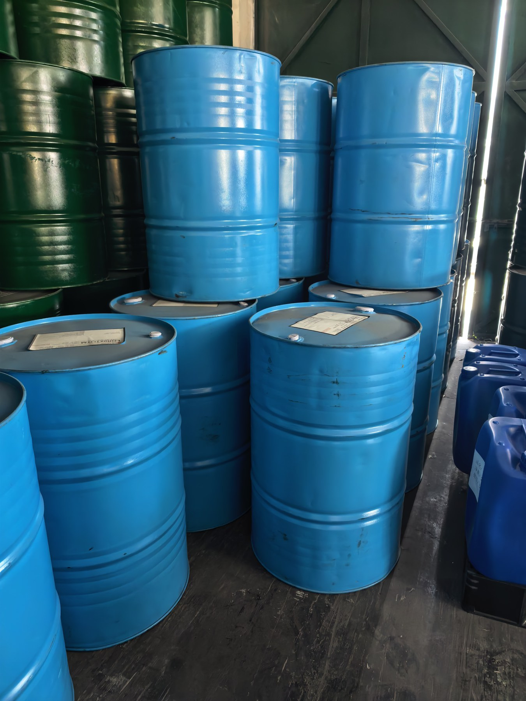

常备供应
TOTM
TOTM（三辛基偏苯三酸酯）属于耐热、低挥发型增塑剂，常用于需要长期稳定性、较低挥发和耐热表现的柔性 PVC 制品。
- 适用于高要求电线电缆料、耐热 PVC 制品和工业软制品
- 适合关注低挥发、低迁移和长期稳定性的客户
- 包装、库存和批次资料以当前报价为准

耐热型增塑剂
TOTM 与 TINTM 面向更高要求的柔性 PVC 配方，适合关注耐热、低挥发、低迁移和长期稳定性的电线电缆、耐热制品及工业软制品客户。

产品介绍
两者都用于更高要求的耐热、低挥发体系。TINTM 可作为更高阶方向，根据客户配方、目标市场和性能要求确认。
常备供应
TOTM（三辛基偏苯三酸酯）属于耐热、低挥发型增塑剂，常用于需要长期稳定性、较低挥发和耐热表现的柔性 PVC 制品。
更高阶材料
TINTM 可理解为相较 TOTM 更高阶的耐热低挥发材料方向，适合更严苛的耐热、稳定性和长期使用要求。
COA、TDS、MSDS 或批次资料可根据客户用途、目的地和供应批次确认。若客户需要在 TOTM 与 TINTM 之间选择，我们建议先提供应用、加工温度、目标市场和性能要求。

销售联系
请留下数量、用途、目的地和所需资料，我们会尽快通过邮箱回复。